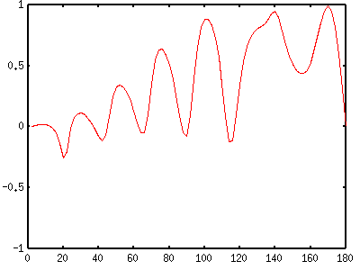
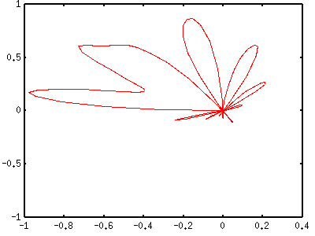
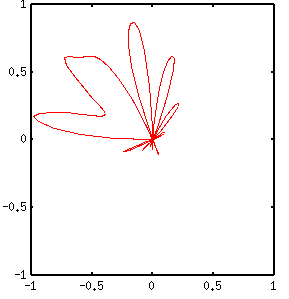
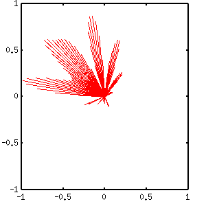
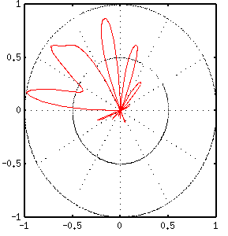
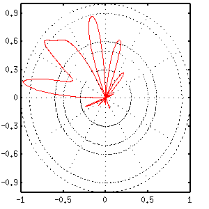

- not so Frequently Asked Questions -
update 2004/9/15
|
|
- not so Frequently Asked Questions - update 2004/9/15
|
|
not so FAQ |
About Polar Coordinateto plot data in the 2-dimensional polar coordinate.In the polar coordinate the data to be plotted are similar to the rectangular coordinate -- (X,Y), but the data represent X="angle" and Y="radius". The data format is the same as the usual two-dim. data. The default unit of angle is radian and the range is 0 to 2*pi. If you want to use a degree unit, set angles degrees. Let's think about the following two-dimensional data, which are shown in the rectangular coordinate, X range is 0 to 180 degrees, Y range is -1 to 1. 
We plot this in the polar coordinate.
gnuplot> set polar
dummy variable is t for curves
gnuplot> set angles degrees
gnuplot> plot "datafile.dat" with lines

Now, adjust the ranges of X and Y, and make the graph square. This is a likely appearance for the polar coordinate plot. gnuplot> set size square gnuplot> set xrange [-1:1] gnuplot> set yrange [-1:1] gnuplot> replot 
 to draw lines from data-points to the origin.In the above example, each (angle, radius) point is connected by a piecewise line. To draw lines from the origin to each data point, use with impules option. gnuplot> plot "datafile.dat" with impulses 
to draw grids.There are two kinds of grid in the polar coordinate. The first one is to draw them at the major tics, which is controlled by the set grid command. This is the same as the usual rectangular coordinate plot. The other one is circles and radial lines which are drawn by the set grid polar angle command. The angle defines the radial lines interval (default 30 degrees). gnuplot> set grid polar 
The circular grids depend on both the major tics of X and Y axes. In the above figure tics for X and Y are 0.5, so that the circles are drawn at the interval of 0.5. If the major tics are changed as follows, the circular grids are drawn at 0.3,0.5,0.6,0.9, and 1.0. gnuplot> set xtics 0.5 gnuplot> set ytics 0.3 
|